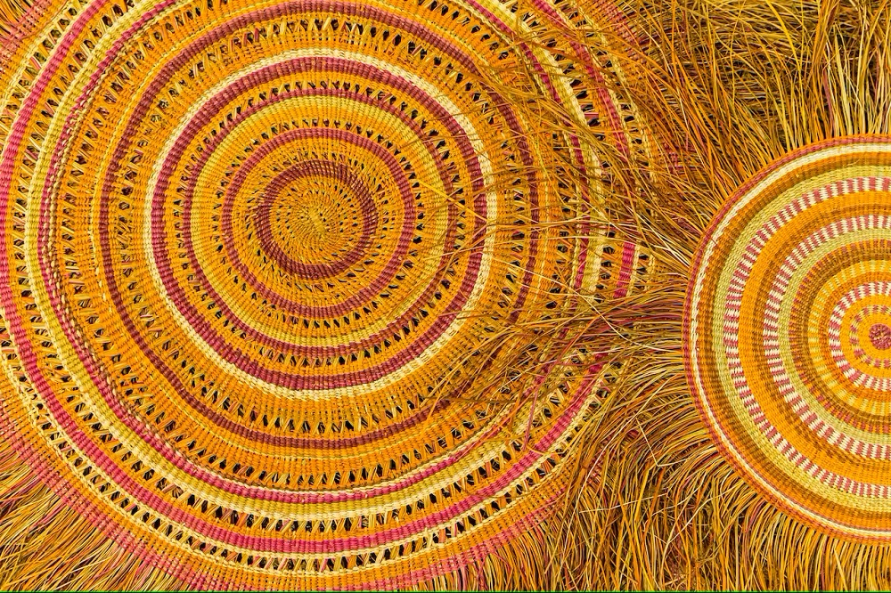
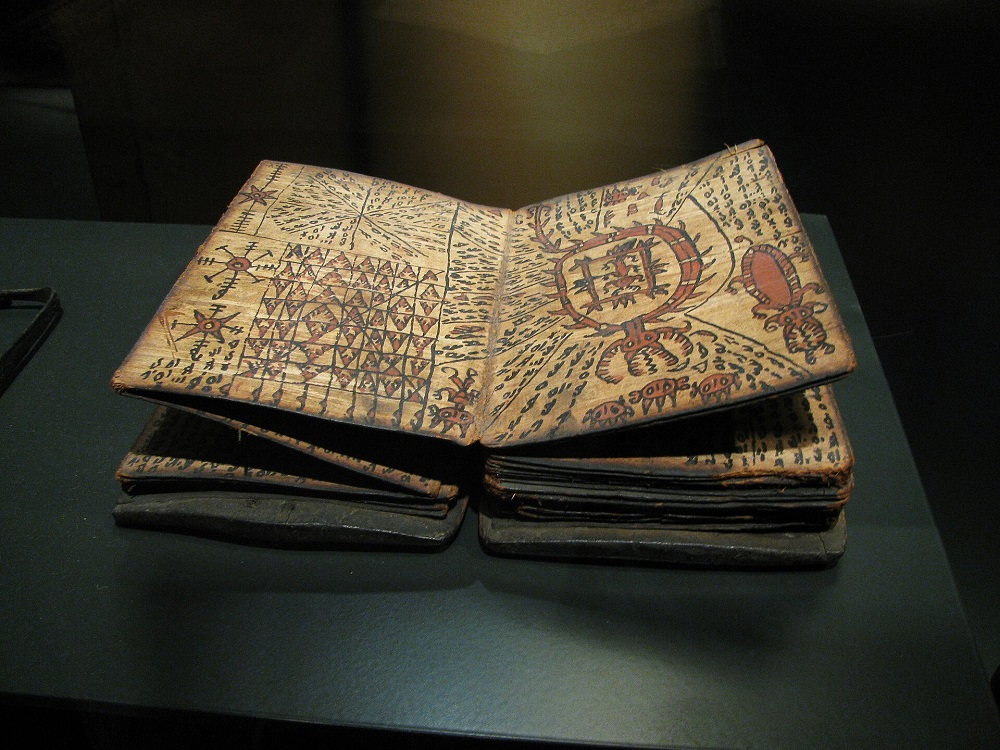

1Donde empezar
Bienvenidx. Mi nombre es Edgardo Civallero. Soy bibliotecólogo, archivista, escritor, investigador, músico y naturalista. Mi trabajo conecta los sistemas de conocimiento, la memoria cultural, los instrumentos musicales de América Latina y la ecología. Escribo desde Quisquiza, entre la niebla, el bosque altoandino y el páramo de Cundinamarca, Colombia, donde también cuido y restauro bosque nativo.
Desde hace más de veinticinco años escribo libros, ensayos, crónicas y trabajos académicos; diseño infraestructuras semánticas y documentales; y trabajo con bibliotecas, archivos, museos, colecciones científicas y comunidades de toda América Latina. Mis proyectos reúnen clasificación, memoria, sonido, territorio y sistemas vivos, con especial atención a las formas de conocimiento que las instituciones convencionales fragmentan, silencian o no llegan a reconocer.
2Cuatro caminos por mi trabajo
Escritura e investigación
Para editorxs, casas editoriales, lectorxs académicxs y público en general.
Libros, artículos académicos, ensayos, crónicas, ficción, proyectos en curso y textos por encargo.
Explorar publicacionesBibliotecas, archivos y sistemas de conocimiento
Para universidades, bibliotecas, archivos, museos, organizaciones sociales y colaboradorxs de consultoría.
Organización del conocimiento, clasificación, metadatos, arquitectura semántica, archivos comunitarios, sistemas documentales, conferencias, talleres y asesoría.
Visitar Tela de ArañaMúsica e instrumentos musicales
Para quienes escuchan música, músicxs, museos, festivales, investigadorxs y organizaciones culturales.
En Estudio paramuno compongo, interpreto y grabo música original con instrumentos tradicionales y experimentales. Y en Instrumentarium investigo instrumentos musicales de todo el mundo, desarrollo el sistema de clasificación MusIC, y presento publicaciones, exposiciones y programas públicos.
Artes, ficción y creación
Para lectorxs, artistas y colaboradorxs interesadxs en las prácticas creativas y materiales.
Ficción, fotografía, ilustración, marionetas, construcción de instrumentos, diseño gráfico y experimentación con materiales y objetos. Estas prácticas se reúnen en Estudio paramuno, mi taller creativo en Quisquiza.
Explorar Estudio paramuno3Nuevas tramas

Las bacterias que mantienen unido el desierto
Publicado el 10 de noviembre de 2026
Mi última entrada en mi blog Crónicas de un biblio-naturalista, "Las bacterias que mantienen unido el desierto", explora cómo las costras biológicas del suelo protegen los terrenos desérticos de la erosión. Examina el papel de las cianobacterias en la unión de las partículas del suelo y la vulnerabilidad de estas superficies vivas frente a las perturbaciones. La entrada también considera qué pueden enseñarnos estos procesos naturales sobre la conservación de archivos y sistemas de conocimiento frágiles mediante pequeñas prácticas que permiten mantener conexiones esenciales.
4Crónicas de lo hecho
Bitácora de textos, sonidos y gestos recientes
Publicado el 1 de noviembre de 2026
Entre el 19 de octubre y el 1 de noviembre de 2026 se publicaron cuatro nuevos textos en distintas series del sitio.
Bibliotecología comunitaria y sistemas de conocimiento indígenas examina la relación entre la bibliotecología comunitaria y los sistemas de conocimiento indígenas, y plantea cómo las bibliotecas y los archivos pueden respetar formas de autoridad, transmisión y responsabilidad cultural que no han creado ni controlan.
Un agujero más viejo que las palabras explora los manuscritos etíopes en pergamino a través de sus superficies de escritura, reparaciones cosidas, encuadernaciones, tintas y el trabajo de quienes los elaboraron. También aborda la tradición de los escribas de Ləggat, que continúa viva, y las interrupciones provocadas por la guerra.
Agua almacenada en el aire examina cómo las bromelias que forman depósitos recogen y retienen agua por encima del suelo del bosque, creando pequeños hábitats, y utiliza esa disposición para reflexionar sobre infraestructuras modestas y distribuidas para bibliotecas y archivos, así como sobre sus límites prácticos y éticos.
Desde Quisquiza | Sitio de investigación reflexiona sobre una vida de trabajo en la que la restauración ecológica, la historia natural y la investigación sobre el conocimiento y la memoria se desarrollan en un mismo lugar. Considera cómo vivir y trabajar dentro del paisaje transforma tanto las preguntas que se formulan como a la persona que las plantea.
5Publicado recientemente
Libros, artículos y otras publicaciones recientes surgidas de mi trabajo sobre conocimiento y memoria, bibliotecas y archivos, música y ecología.
El territorio como documento: Repensar los archivos desde una geoética de la memoria
Una propuesta para comprender el territorio como documento y archivo vivo de memoria ecológica, histórica y cultural. El artículo desarrolla el concepto de geoética de la memoria y cuestiona las prácticas documentales que separan el conocimiento de sus contextos territoriales, proponiendo formas de preservación basadas en la responsabilidad hacia los lugares, las relaciones y las comunidades que sostienen esa memoria.
When Music Leaves No Objects: Yámana Vocal Practice and the Archival Bias Toward Instruments
Un examen de cómo la práctica vocal yámana pone de manifiesto el sesgo hacia los objetos de archivos, museos y taxonomías organológicas. Centrado en una tradición musical articulada en torno a la voz y no a los instrumentos, el artículo desarrolla una tipología de la ausencia y se pregunta qué dejan sin recoger, clasificar o escuchar los sistemas de preservación.
An Architecture of Vanishing: Toward a Protocol of Archival Disappearance
Una propuesta para considerar la desaparición, el retiro, la opacidad y la duración limitada como formas legítimas de cuidado archivístico. El artículo desarrolla protocolos temporales, espaciales, relacionales, semánticos y materiales mediante los cuales los archivos pueden proteger la memoria permitiéndole replegarse, transformarse o llegar a su fin.
Fabricating Authenticity: Embera Nemboro Masks, Heritage Desire, and Metadata Fictions in Panama
Un análisis de cómo unas máscaras de cestería embera de desarrollo reciente llegaron a ser presentadas como objetos rituales antiguos, y de cómo los mercados, los museos y los metadatos pueden transformar historias inciertas en tradiciones aparentemente estables.
6Textos, sonidos y trazas recogidas
Libros, artículos, ensayos, crónicas, registros sonoros y publicaciones anteriores se reúnen en un archivo estructurado que recorre mi trabajo sobre bibliotecas, archivos, sistemas de conocimiento, memoria cultural, sonido, ecología y territorio.
7Invitaciones y colaboraciones
Estoy disponible para escribir ensayos y crónicas por encargo, desarrollar proyectos editoriales, dictar conferencias y talleres, participar en exposiciones y programas públicos, realizar trabajos de asesoría y establecer colaboraciones de investigación relacionadas con bibliotecas, archivos, memoria cultural, instrumentos musicales tradicionales, infraestructura semántica, ecología y conocimientos situados.